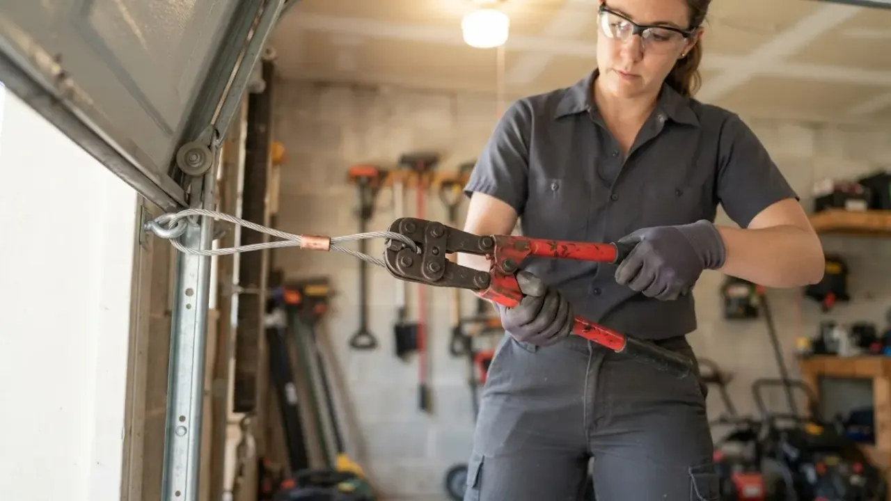

Snapped cables fixed same-day across Hillsborough County
Garage Door Cable Replacement in Tampa
When a cable snaps, your door drops crooked and the opener strains against a load it was never built to lift. Our garage door cable replacement in Tampa gets that door level and running smooth again, usually the same day you call. We stock galvanized steel cables for LiftMaster, Chamberlain, Genie, and Clopay systems, so most jobs are one visit, start to finish.
Live dispatcherUpfront optionsBacked workmanship
What's included
What Our Cable Replacement Service Includes
Every cable job covers the parts and labor needed to get your door lifting level and safe again. We tell you upfront if anything outside the standard scope needs attention, and you approve it before we start.
Matched Galvanized Cable Pair
We replace both lift cables with galvanized steel cable sized to your door height and weight. Matched pairs keep the door level and prevent the second cable from failing weeks after the first.
Drum and Bracket Inspection
We pull both cable drums and check the bottom brackets for cracks, worn grooves, and corrosion. Damaged drums get replaced during the same visit so the new cables spool correctly and don't fray on a rough edge.
Torsion System Re-Tension
After the new cables are threaded, we re-wind the torsion springs to the correct turns and check door balance by hand. A balanced door protects the opener and dramatically extends cable life.
Safety Reverse and Sensor Test
We test the safety reverse and align the photo eye sensors per UL 325 before we leave. If a sensor is dead or misaligned, we fix it during the same appointment so the door closes safely.
Full Cycle Testing
We run the door through at least three complete open-and-close cycles, watching for binding, noise, and uneven travel. Anything that doesn't look right gets corrected before we pack up.
One-Year Parts and Labor Warranty
Cables and labor are warrantied for one year. If a cable we installed fails inside that window, we come back and make it right at no cost to you.
Service overview
What Garage Door Cable Replacement in Tampa Involves
Garage door cable replacement in Tampa means swapping the two braided steel lift cables that run from the bottom bracket up to the cable drums on the torsion shaft. When one frays or snaps, the door hangs uneven, the panels rack sideways, and the opener starts grinding. We pull the tension off the torsion springs with proper winding bars, unspool the old cable from the drum, thread a new galvanized cable, and re-tension the system so both sides lift evenly.
Tampa's salt air and summer humidity chew through cheap cables faster than most homeowners expect. We see snapped garage door cable calls constantly in South Tampa, Davis Islands, and Apollo Beach, where coastal air accelerates corrosion. If you search garage door cable replacement near me Tampa and get a crew that skips the drum inspection, you'll be calling them again in six months. We check the drums, cones, and bottom brackets every time.

How we workWe verify the cause, compare realistic options, and confirm the repair before we leave.
The service timeline
How Our Cable Replacement Process Works
The process flexes to the condition, but these checkpoints keep decisions clear.
Phone Diagnosis
You describe what the door is doing, we ask a few questions about noise, tilt, and whether the opener still runs. In about five minutes we know if it's a cable, a torsion spring, or an off-track issue, and we quote a realistic range before we roll.
On-Site Safety Check
First thing on arrival, we disconnect the opener, clamp the door, and inspect both cables, the drums, the bottom brackets, and the torsion springs. This takes 10 to 15 minutes and tells us whether you need one cable or a matched pair.
Cable Swap
We release tension with garage door torsion spring winding bars, unspool the damaged cable from the drum, and thread the new galvanized cable through the bracket and drum. Both cables get replaced as a pair on most jobs, which takes 45 to 90 minutes.
Re-Tension and Balance
We re-wind the springs to the correct turns, then lift the door by hand to check balance. A properly balanced door stays put halfway up. If it drifts, we adjust until it holds, which protects the opener gears and the cables themselves.
Test Cycles and Walkthrough
We run the door through three full open-and-close cycles, check the photo eye sensors and safety reverse, then walk you through what failed and what to watch for. You get a written warranty on the cables and the labor before we pull out of the driveway.
Tools & methods
Tools and Methods We Use on Cable Jobs
Purpose-built equipment, used by trained technicians, so the job is done accurately the first time.
Garage Door Torsion Spring Winding Bars
Steel bars used to safely release and re-apply tension on the torsion springs before any cable is touched. Without them, the spring can unwind violently and cause serious injury.
Garage Door Cable Drums and Winding Cones
We keep replacement drums and cones on hand for the most common door sizes. Worn or grooved drums fray new cables fast, so we swap them whenever the grooves are cut too deep.
Garage Door Torque Wrench
Used to tighten set screws and bracket bolts to spec. Under-torqued hardware lets the drum slip on the shaft, which is a common cause of repeat cable failures.
Garage Door Track Bender
When a snapped cable bends the vertical or horizontal track, we use a track bender to straighten it precisely instead of replacing the whole run.
Garage Door Panel Lift
For doors that need a panel swapped after cable damage, this tool supports and positions the section safely without risking a back injury or a dropped panel.
Garage Door Sensor Alignment Tool
Aligns photo eye sensors after cable work so the safety reverse functions correctly and the door doesn't reverse on its own mid-close.
Use cases
When Tampa Homeowners Call Us for Cables
These examples show how the service framework adapts rather than forcing every call through one repair.

Corroded Cables Near the Bay
A Davis Islands homeowner's door started jerking on the way up, and the cables showed heavy rust. A previous company had replaced only one cable, and the other failed within months, leaving the door stuck halfway open. → We replaced both cables with heavier galvanized ones, installed corrosion-resistant bottom brackets, and lubricated the full system. The jerking stopped and the door has run smooth for over a year in the same salt air.
Off-Track Door After Cable Failure
A Westchase family's door jumped the track when a cable snapped, and the opener kept running until it stripped a gear. The door was stuck open, and two rollers were bent from the drop. → We reset the door on the track, replaced both cables and four rollers, and repaired the opener gear. The door closed and sealed properly, and the whole job was done in one visit instead of two.
Problems we solve
Cable Problems We Fix in Tampa Every Week
Cable failures show up in a handful of recognizable ways. If any of these sound familiar, the cable is usually the culprit, and the longer you run the door, the more it costs to fix.
Snapped garage door cable hanging loose
We replace both cables, inspect the drums and bottom brackets, and re-balance the door. Most snapped-cable jobs are finished in under two hours with a one-year warranty on the new cables.
Door lifts uneven or looks tilted
We check cable tension on both sides, inspect the drums for worn grooves, and replace the cables if they're stretched. Then we re-tension the torsion system so the door lifts level from the first inch.
Opener runs but door won't lift
We disconnect the opener, confirm the cable failure, and replace the cables first. Then we test the opener under load and repair or replace it only if the cable damage actually wore it out.
Loud bang from the garage, door stuck open
We secure the door, replace the failed cables and any damaged hardware, and get it closing again the same day. If you can't wait, we run emergency cable calls across Tampa day and night.
Pricing process
What Cable Replacement Costs in Tampa
$180 - $450 for most residential cable replacements
Door height and weight
An 8-foot or 9-foot door carries more cable tension and uses longer cables than a standard 7-foot door. Taller doors also take more time to balance, which nudges labor up.
Drum and bracket condition
If the cable drums are grooved or the bottom brackets are cracked, they need replacing with the cables. Skipping them means the new cable frays on a rough edge and fails early.
Single vs. double cable
We recommend replacing both cables as a pair. A single-cable job costs less today but usually means a second service call within months, so the pair is almost always the better spend.
Customer reviews
What Tampa Customers Say
★★★★★
“Heard a bang from the garage on a Tuesday morning and found the door hanging crooked with one cable snapped clean. They came out the same afternoon, replaced both cables and the bottom brackets, and had it balanced in about an hour. Price matched the quote exactly. Door runs quieter than it did before.”
★★★★★
“Living near the water, our cables rusted out fast. The first company just swapped one cable and it failed again in four months. These guys replaced the pair with heavier galvanized cable and showed me the old ones, which were green with corrosion. No problems since, and that was over a year ago.”
★★★★★
“Our door wouldn't close and the opener was grinding. Turned out the cable had jumped the drum and the door was off track. They reset the door, replaced the cables and a couple of rollers, and tested everything before leaving. Straight answers, fair price, and they cleaned up after themselves.”

How much does garage door cable replacement cost in Tampa?
Most Tampa cable replacements run $180 to $450, with the typical job landing around $250 to $300 for a matched pair on a standard two-car door. Cost depends on door height, whether the drums or bottom brackets need replacing, and whether the door is a single or double. Coastal homes with heavy corrosion sometimes need extra hardware, which pushes the top of the range.
How long does garage door cable replacement take in Tampa?
A standard cable replacement takes 45 to 90 minutes once we're on site. If we're also replacing drums, bottom brackets, or a torsion spring, plan on two to three hours. We block enough time on the schedule that we're not rushing the balance check, because a door that isn't balanced will eat the new cables.
Should I replace both garage door cables in Tampa?
Yes, replace both. Cables wear at the same rate, so when one snaps, the other is usually within weeks of failing. Replacing a single cable means paying for a second service call soon after, and a mismatched pair pulls the door uneven. We quote matched pairs by default and only do one cable if you specifically ask.
Who replaces garage door cables in Tampa?
A licensed garage door contractor with torsion spring experience, not a general handyman. Cables sit under extreme tension, and releasing that tension wrong can cause serious injury. We handle cable replacement across Tampa and Hillsborough County daily, carry the right winding bars and drums, and warranty both parts and labor for a year.
Related services
Related Services

Garage Door Repair
Cable damage rarely travels alone. When we replace cables in Tampa, we check tracks, hinges, and rollers for the same wear pattern. If your door needs broader repair work, we handle it in the same visit so you're not scheduling twice.
Garage Door Spring Repair
Cables and torsion springs share the load, so a snapped cable often means a fatigued spring. We inspect both during every cable job and can replace springs on the spot, which saves Tampa homeowners a second service call and a second trip charge.
Garage Door Opener Repair
A door running on one cable strains the opener gears hard. If your LiftMaster or Chamberlain opener is grinding or running but not lifting after a cable failure, we diagnose the opener during the same visit and repair what the cable damage wore out.Ready when you are
Get Your Garage Door Cable Replacement in Tampa Today
One snapped cable turns a working door into a hazard in seconds. Call us and we'll give you a straight price, a same-day window, and a one-year warranty on the cables and the labor. Licensed, insured, and stocked for Tampa's coastal air.

Talk with the local team
Request Garage Door Cable Replacement
Call, text or email and a real person answers, day or night. Tell us what the door is doing and we will give you a price range on the spot plus the soonest arrival window. Most calls placed before mid-afternoon get a same-day visit anywhere in Hillsborough County.